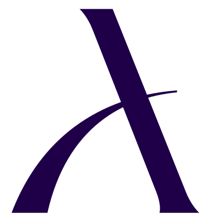
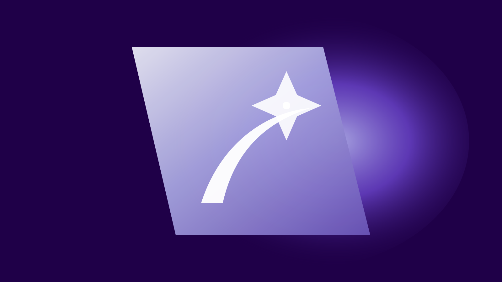

ЦЕНТР БРЕНДА
Все о бренде
AURIX
Правила фирменного стиля, логотипы, цвета, шрифты и готовые материалы — в одном месте.
01ОСНОВА БРЕНДА
Логотип
Используйте только оригинальные файлы. Не меняйте пропорции, цвет и взаимное расположение элементов.

Скачать все версииОригинальный векторный файл
{kind=link}
ПРАВИЛА ИСПОЛЬЗОВАНИЯ
Охранное поле
Охранное поле вокруг логотипа соответствует размеру и пропорциям буквы «A». Оно необходимо для сохранения целостного восприятия логотипа.

Не допускается
- Искажать пропорции
- Менять расстояние между элементами
- Добавлять обводки, тени и эффекты
- Использовать некорпоративные цвета
02ВИЗУАЛЬНЫЙ ЯЗЫК
Палитра
Сине-фиолетовый оттенок — доминирующий цвет бренда. Сиреневые оттенки, черный и белый дополняют его.
03ТИПОГРАФИКА
Guild A Display
+ TT Hoves Pro
Guild A Display используется как акцентный шрифт. TT Hoves Pro — наборный шрифт для основного текста и интерфейсных элементов.
Aa
Аа Бб Вв Гг Дд Ее Жж Зз Ии Йй Кк Лл Мм Нн Оо Пп Рр Сс Тт Уу Фф Хх Цц Чч Шш Щщ
Guild A Display · 56Магия
Магия
премиального
девелопмента
TT Hoves Pro · 18
AURIX — девелопер как создатель новых звезд. Продуманность каждой детали, выверенность решений и мастерство исполнения формируют особую магию премиальной недвижимости.
Скачать настройку шрифтовGuild A Display + TT Hoves Pro · локальное подключение

{kind=link}
МАТЕРИАЛЫ
Все необходимое
для работы
Логотипы, фирменная палитра и руководство по стилю AURIX собраны в одном месте.